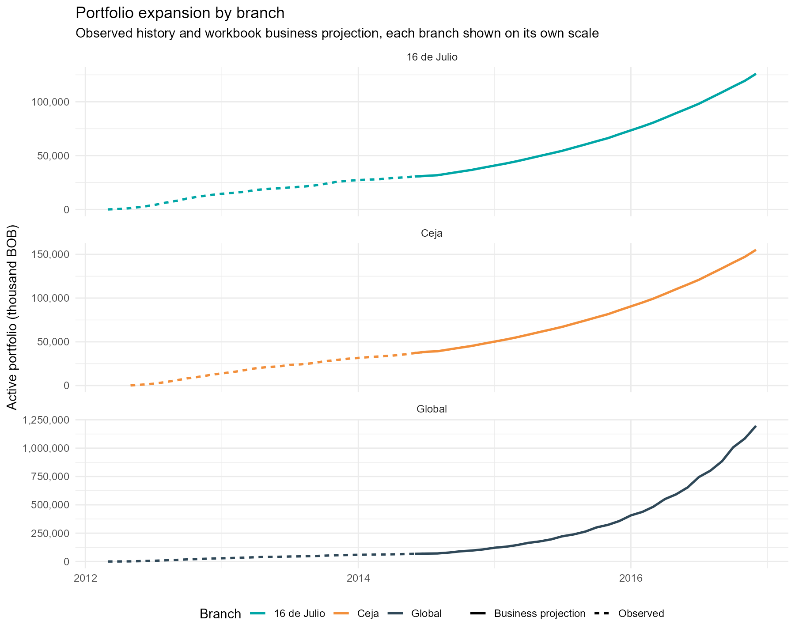
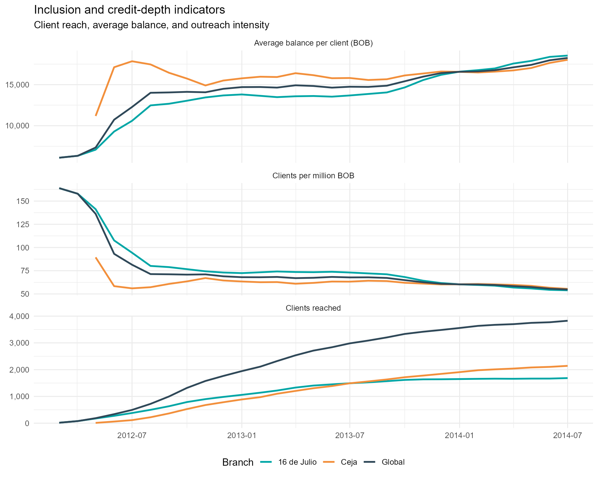
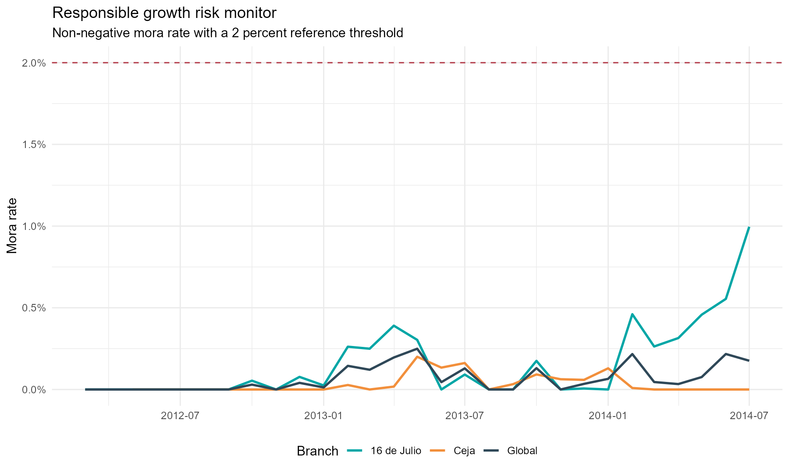
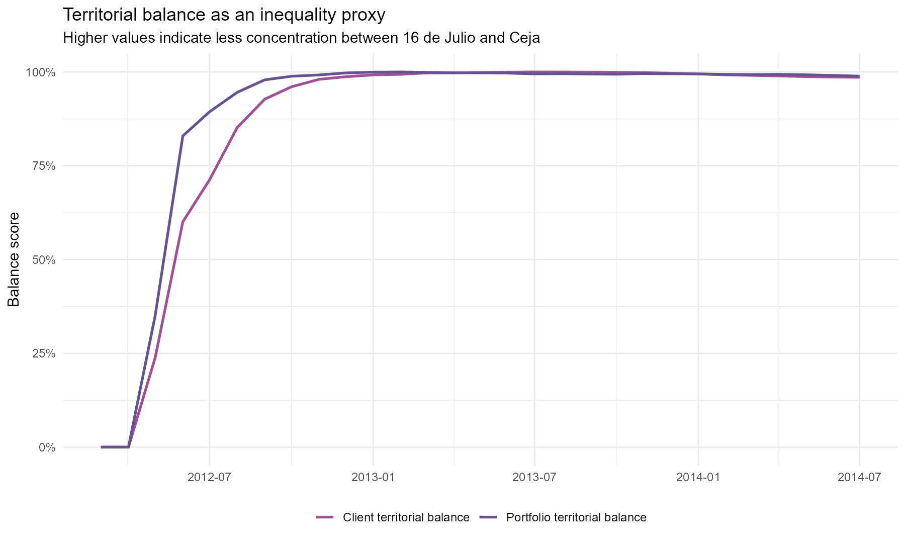
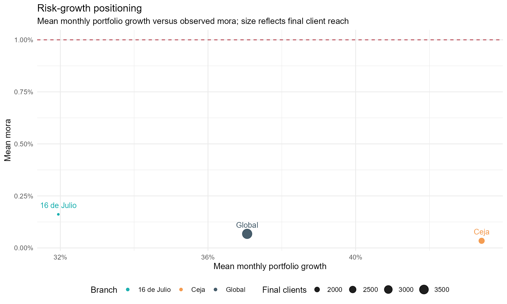
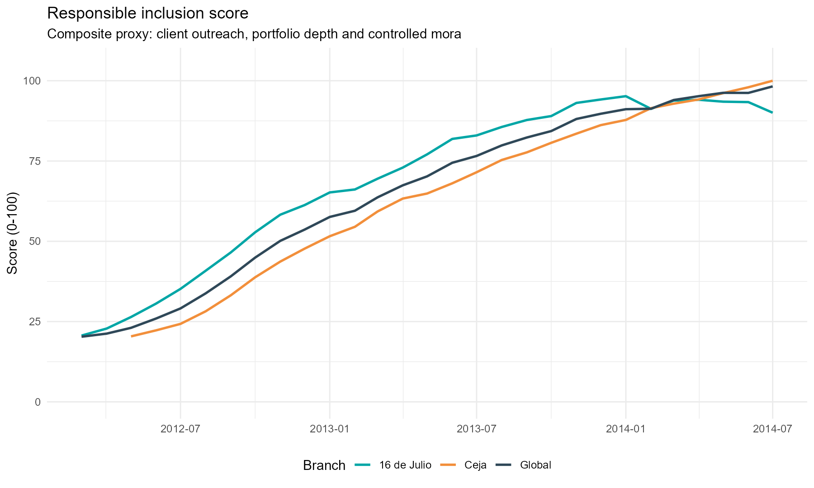
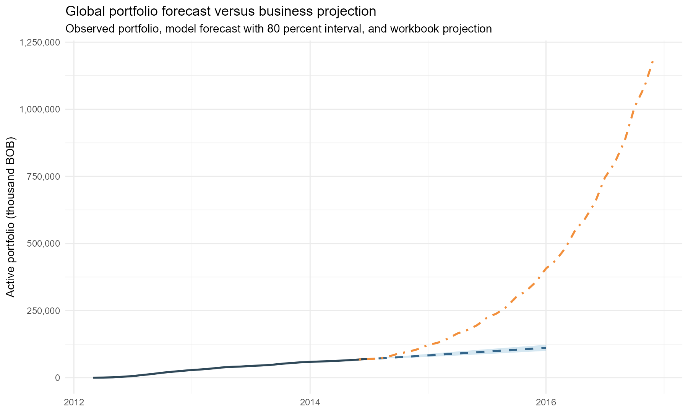
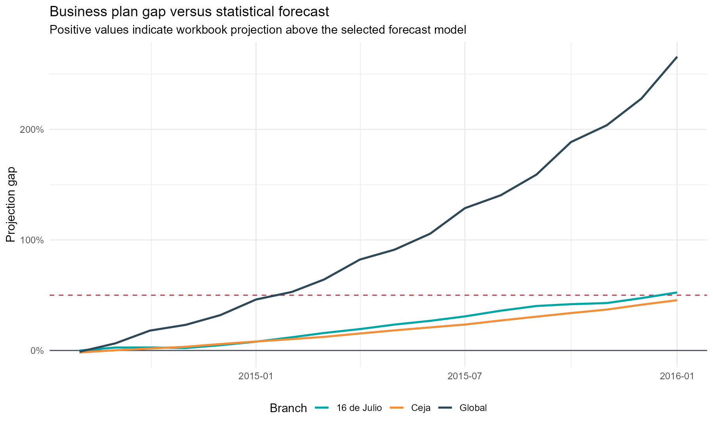
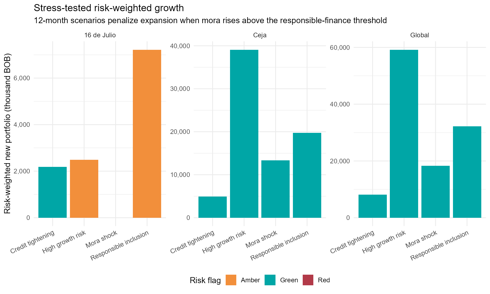

Analytical narrative









Branch diagnostic summary
| branch | strategic_priority | development_interpretation | risk_adjusted_outreach_score | mean_monthly_portfolio_growth | mean_mora | max_mora | final_clients |
|---|---|---|---|---|---|---|---|
| 16 de Julio | Scale outreach while preserving underwriting discipline | Mature access node with visible risk-management needs | 45.508 | 0.319 | 0.002 | 0.010 | 1,685 |
| Ceja | Scale outreach while preserving underwriting discipline | Territorial diversification node for access equity | 62.529 | 0.434 | 0.000 | 0.002 | 2,142 |
| Global | Scale outreach while preserving underwriting discipline | Portfolio-wide inclusion frontier | 97.505 | 0.371 | 0.001 | 0.002 | 3,827 |
Forecast model validation
| branch | model | rmse | mae | mape |
|---|---|---|---|---|
| 16 de Julio | Naive | 2,930.21 | 2,594.19 | 8.69 |
| 16 de Julio | ETS | 2,624.69 | 2,367.39 | 7.96 |
| 16 de Julio | ARIMA | 2,277.59 | 2,043.13 | 6.86 |
| Ceja | Naive | 4,192.27 | 3,626.07 | 9.98 |
| Ceja | ETS | 1,748.59 | 1,643.71 | 4.61 |
| Ceja | ARIMA | 2,003.89 | 1,879.57 | 5.26 |
| Global | Naive | 7,659.43 | 6,717.58 | 10.22 |
| Global | ETS | 5,999.14 | 5,463.70 | 8.37 |
| Global | ARIMA | 3,759.32 | 3,451.71 | 5.30 |
Stress testing scenarios
| branch | scenario | ending_portfolio_kbob | ending_clients | stressed_mora_rate | risk_flag |
|---|---|---|---|---|---|
| 16 de Julio | Credit tightening | 35,203.13 | 1,854.071 | 0.009 | Green |
| 16 de Julio | High growth risk | 62,863.01 | 2,546.151 | 0.018 | Amber |
| 16 de Julio | Mora shock | 42,015.66 | 2,014.617 | 0.027 | Red |
| 16 de Julio | Responsible inclusion | 47,207.28 | 2,266.138 | 0.011 | Amber |
| Ceja | Credit tightening | 43,505.79 | 2,356.925 | 0.000 | Green |
| Ceja | High growth risk | 77,689.26 | 3,236.709 | 0.000 | Green |
| Ceja | Mora shock | 51,925.06 | 2,561.014 | 0.000 | Green |
| Ceja | Responsible inclusion | 58,341.12 | 2,880.752 | 0.000 | Green |
| Global | Credit tightening | 78,708.92 | 4,210.996 | 0.002 | Green |
| Global | High growth risk | 140,552.27 | 5,782.860 | 0.003 | Green |
| Global | Mora shock | 93,940.71 | 4,575.631 | 0.005 | Green |
| Global | Responsible inclusion | 105,548.40 | 5,146.890 | 0.002 | Green |
Methodological position
The analysis is deliberately association-based. It deepens the portfolio work with model validation, stress testing and early-warning diagnostics while preserving the original limitation: no causal poverty claim is made without socioeconomic outcome data and a credible identification strategy.